Creating A Dedicated Cloud Server For Terraria In Azure
A guide on how to run your own dedicated Terraria server in Azure.
Introduction¶
Skill Level Required: Intermediate
Firstly, if you have never heard of Terraria before, just do yourself a favour and buy a copy on Steam or GOG. Now, Terraria is a very fun game in single-player mode. But as with most games, it's much more fun to play it with friends.
Now you might be asking yourself, why would I want to create my own dedicated server over just inviting my friends over Steam? Here are a few advantages of having a dedicated Terraria Server:
- Not everyone plays Terraria on Steam and Steam players cannot easily play with GOG players.
- Some people live in apartments with shared wifi and the router is not accessible for setting up port forwarding etc.
- Most people use wifi these days and if you host the game with your wifi network then everyone else will have additional latency.
- If one person is hosting the game and decides that they have had enough then no one else can play.
- If you want to change game hosts you need to manually copy the game world between people.
Why would you want to set up your own private server over using a dedicated server platform that does all the work for you?
- Well, I live in South Africa and I couldn't find a dedicated server platform for this country and having the game hosted in the States will add too much latency
- You looking at $10-$30 per month, regardless of how much you and your friends are playing. I'd rather have a server that I pay per hour and can turn off when it's not needed.
Getting Started¶
You going to need the following for this tutorial:
- An Azure Account for hosting your dedicated server.
- An ssh client, I'm going to be using Snowflake but you can use Putty if you prefer. I just find Snowflake to be easier to use in general.
- A copy of Terraria on Steam or GOG
Creating And Configuring An Azure Virtual Machine¶
Creating Your First Ubuntu Virtual Machine¶
Now I'm going to assume that you have created an Azure account and you have logged in.
The first thing that you going to need to do is to create a Resource Group. Now a Resource Group is just a grouping of your VMs, storage volumes, virtual network interfaces that you have in your Azure account.
To create a Resource Group simply click on the Resource Groups button.
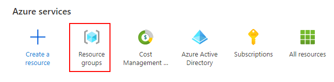
Next click on the Create button
Now create a name for the Resource Group. I went for "Terraria-LAN-RG" and select a region nearby.
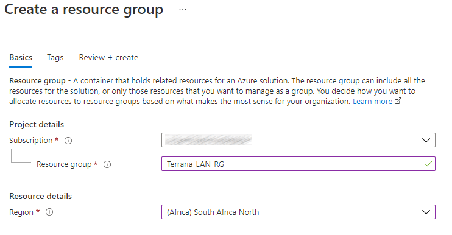
Select the Review + create button, double-check your choices and if satisfied select the Create button.
Now we open our newly created Resource Group
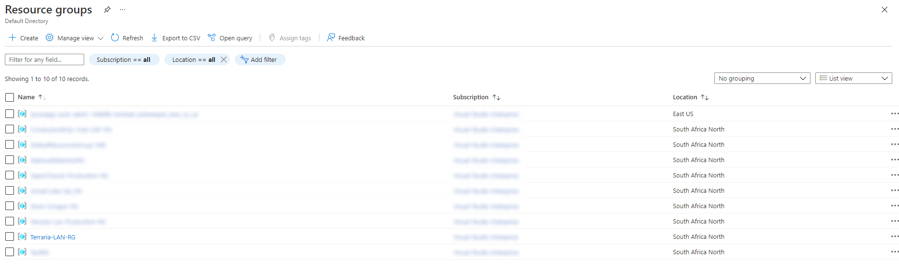
Next, we want to create a Virtual Machine resource. We click on the Create button and we are going to select ** Ubuntu Server 20.04 LTS**.
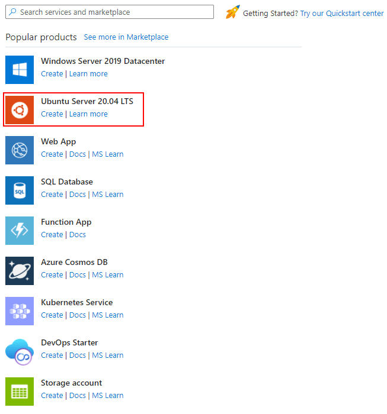
Complete the form and make sure that you choose Standard B2 or any other option with at least 4GB of RAM for the ** Size and Password for Authentication Type**. Make sure you create a nice strong password for the virtual machine. Keep the username and password handy as you are going to need them for the rest of this tutorial.
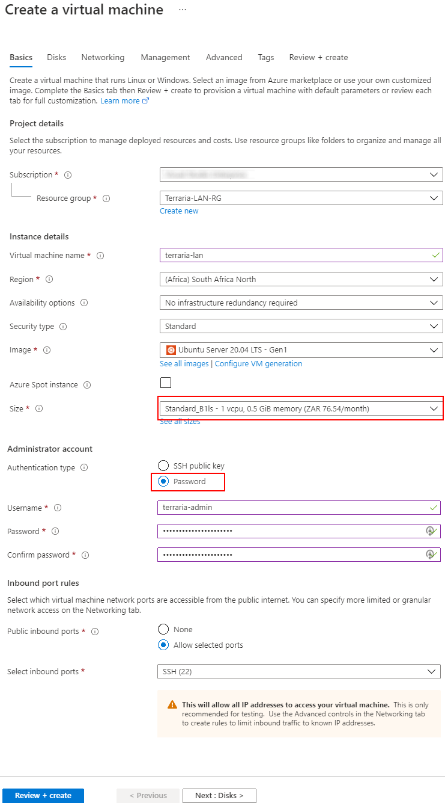
Select the Next: Disks button
Change the OS disk type to Standard HDD since we don't need fast disk speeds for a Terraria server.
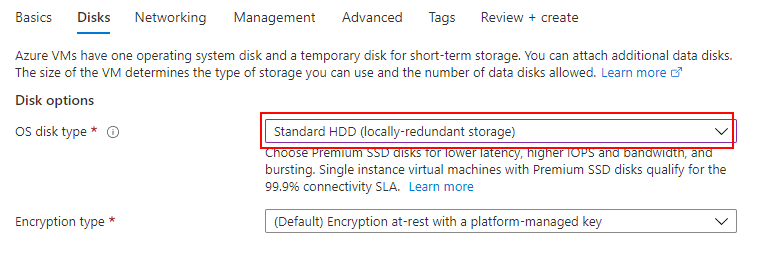
Select Review + create button, double-check your settings and select the Create button.
You'll need to wait 2 minutes or so for Azure to create your virtual machine.
Once the deployment is complete, select the Go to resource button
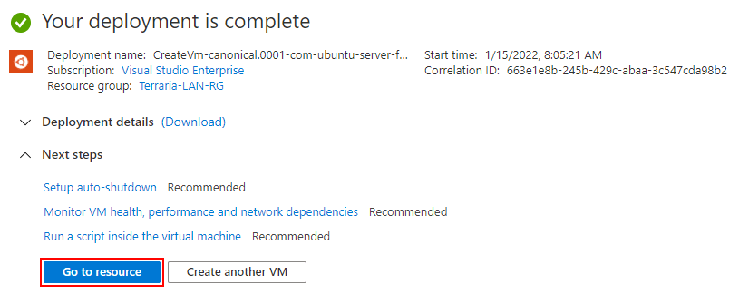
Configuring Your Virtual Machine¶
The first thing we are going to do is give our virtual machine a DNS name by clicking on the Configure link under Networking since IP addresses are much harder to remember
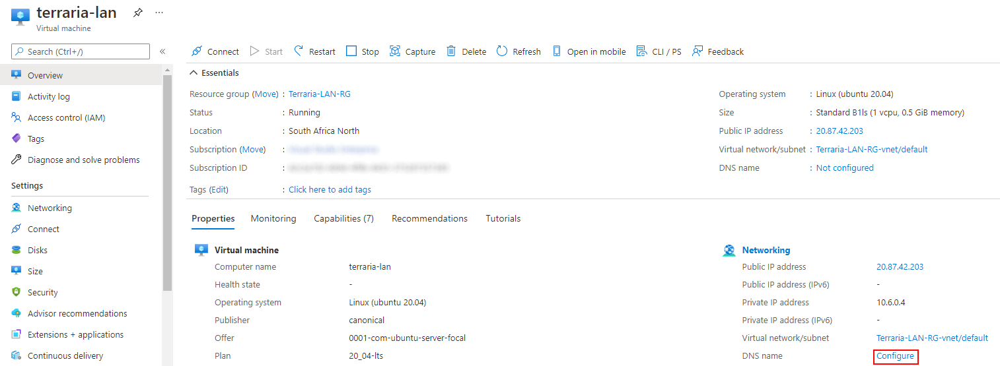
Change the IP address assignment to Static and give the server any DNS name that you like, I called mine ** terraria-lan. Now click on the Save** button.
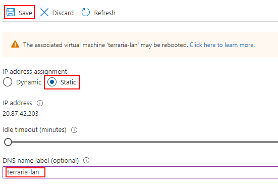
Go back to the Overview screen of your Virtual Machine. Take note of your Public IP address and DNS name as you'll need these later.
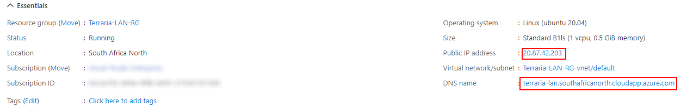
Next, we need to go to Networking and open port 7777 (Terraria's default port)
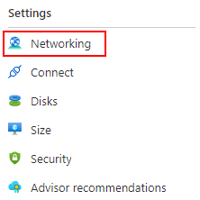
Select Add inbound port add button.
Set the Destination port ranges to 7777 followed by the Add button.
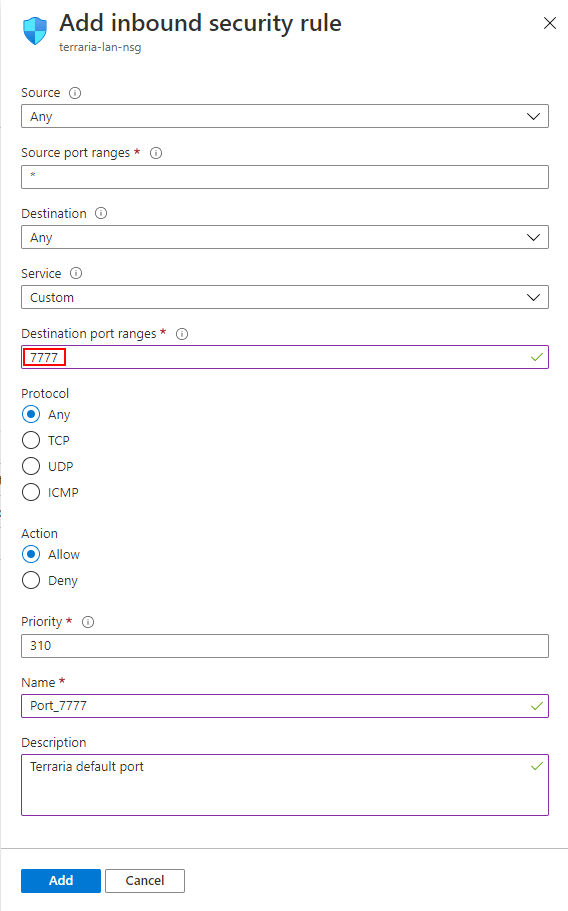
The last thing that you might want to change is the Auto-Shutdown under Operations in the side menu. Having the Auto Shutdown will save you money but make sure you select a time that you are unlikely to be mid-game.
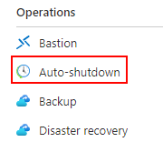
Running Your Server¶
Now that your Virtual Machine is up and running.
We need to do the following:
- Getting the server files from the Terraria website
- Transfer the server files to your new virtual machine
- Starting up the server
Getting The Server Files¶
Download the latest version of Terraria Server, at the time of writing it was a version 1.4.3.2 and extract it to somewhere convenient on your computer. I went with c:\temp\terraria-server-1432
Open the subfolder 1432\Linux and it should look something like the screenshot below.
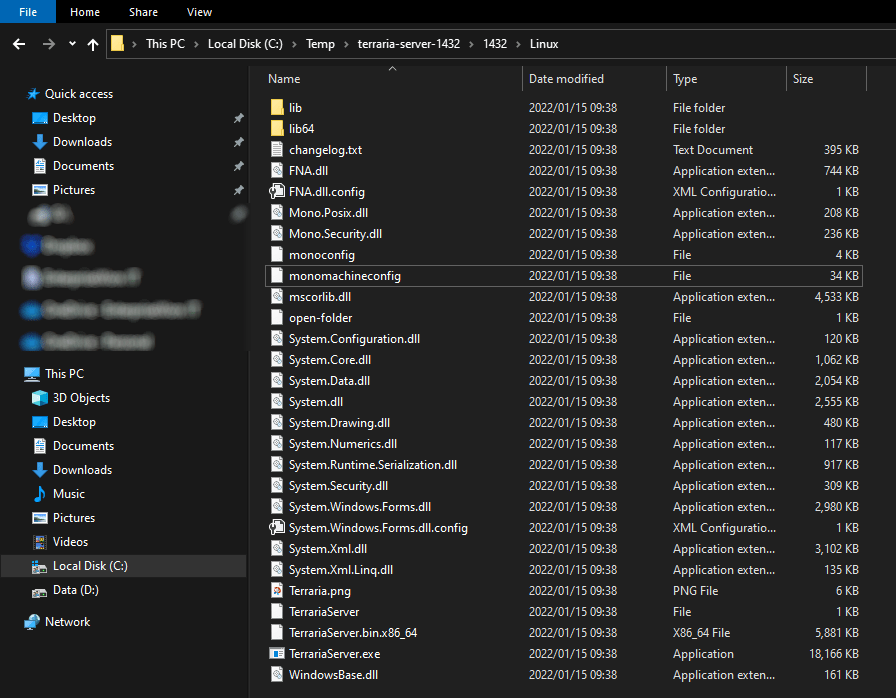
Transfering The Server Files To Your Virtual Machine¶
Fire up Snowflake. Add a New Connection. Create a New Site.
- Name - Any name you want to call it. I called my site Terraria-Server.
- Host - the DNS name that you captured earlier
- User - the username you created for your VM
- Password - the password you created for your VM
- Terraria Server files
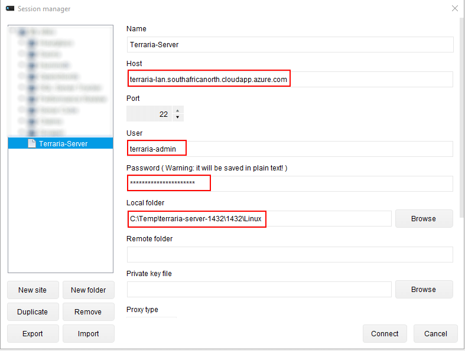
Click on the Connect button.
You'll get a notification that looks something like this. Click on Yes
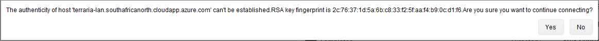
In the Files section in SnowFlake. Change your path to the location where you extracted your Terraria Server files.
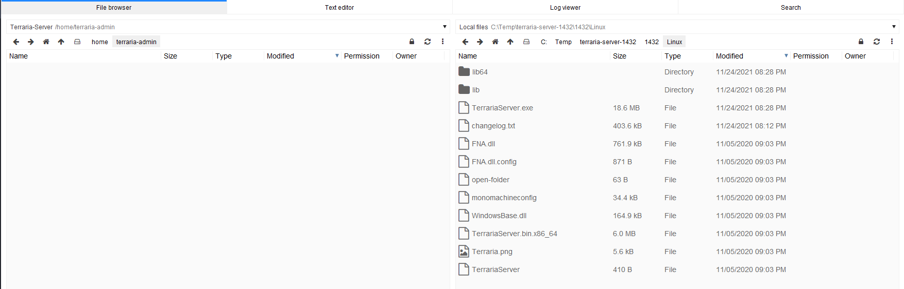
Just drag and drop your files from your Windows machine (on the right) to your Azure Ubuntu Server on the left. Select Yes. Then select OK. This might take a minute or two to complete.
Setting Up Your Server¶
Next, go to the Terminal tab in SnowFlake.
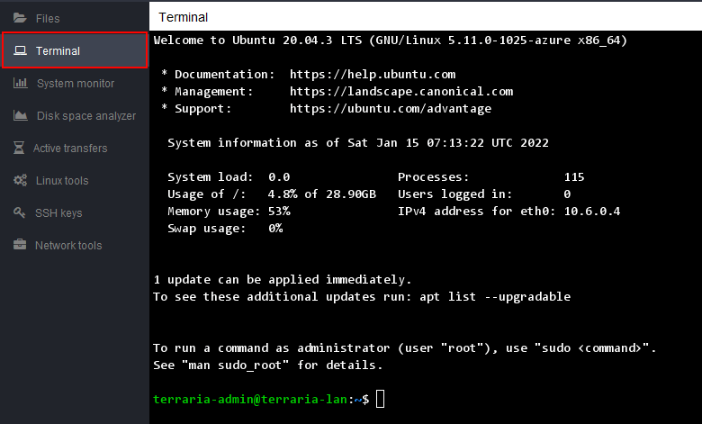
Now you can run any Linux command line commands here on your Ubuntu Virtual Machine. The first one we going to use is the ls command see confirm that we copied over all the files correctly.
ls
## Expected output
## FNA.dll FNA.dll.config Terraria-min.png TerrariaServer TerrariaServer.bin.x86_64...If we can see all the files, we need to make the TerrariaServer.bin.x86_64 file executable. We do this with the ** chmod** command below
chmod +x TerrariaServer.bin.x86_64Now we can start our server by running TerrariaServer.bin.x86_64. Note the "./" prefix make sure you include that.
./TerrariaServer.bin.x86_64Follow the prompts for creating your server
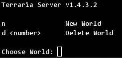
Follow the prompts and if you see the following:
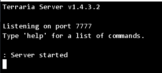
Note: In future, you'll just need to run the command below to run your server.
./TerrariaServer.bin.x86_64Connecting To Your New Server¶
Now we start up Terraria. Select Multiplayer followed by Join via IP.
Select/Create your Character. Note that Classic characters can only play in Classic worlds, same for Journeyman characters.
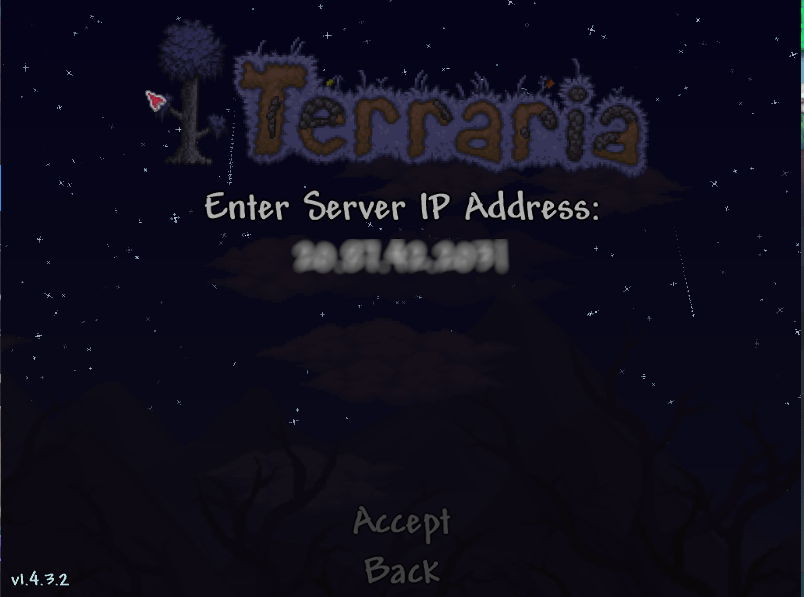
Keep the default Port
Fill in the Server password
Keep an eye on the server terminal window for any errors and to see who cannot join and why.
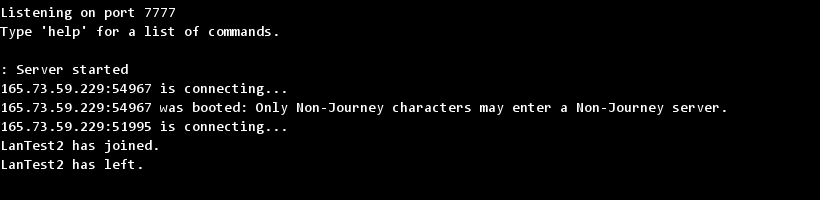
If all goes well you'll be in the game and your friends can join.
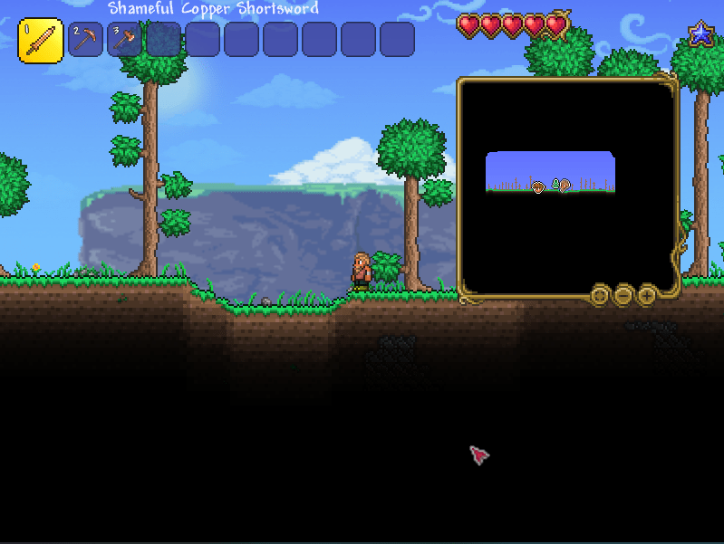
Have fun!!!